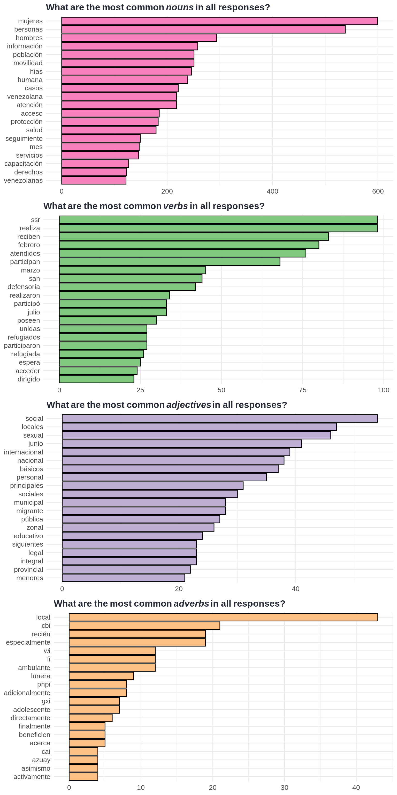
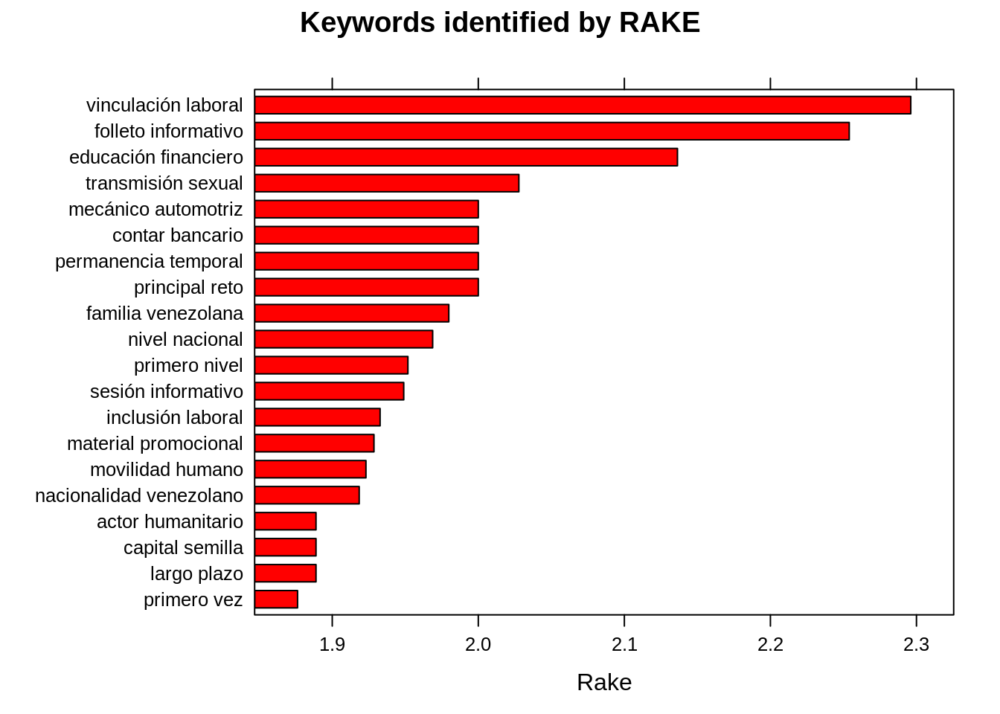
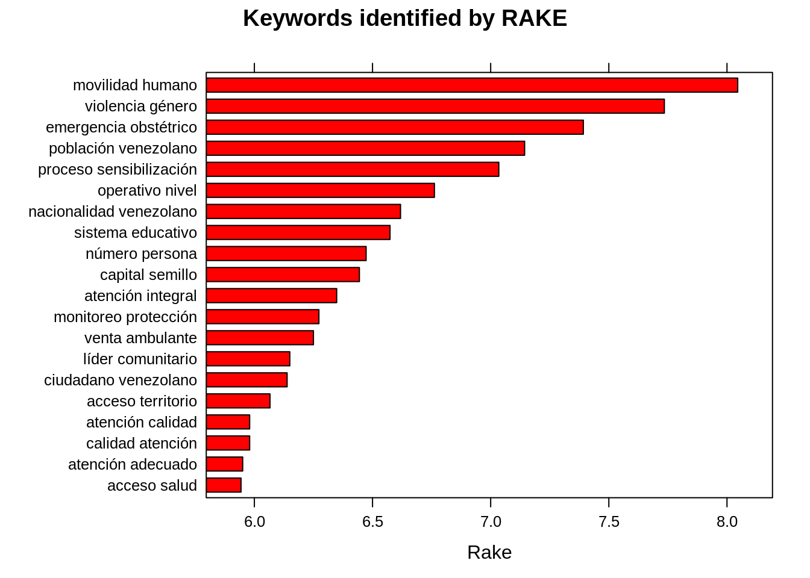

Part of speech tagging
We use the UDpipe library with the corresponding udpipe R package for PoS (part-of-speech tagging) and dependency parsing. UDpipe library is using Universal Dependencies5.
Universal Dependencies (UD) is a framework for consistent annotation of grammar (parts of speech, morphological features, and syntactic dependencies) across different human languages.
UDpipe package also offers tokenization and lemmatization; however, they are not the essential processes for this part because they are done in previous pages (see the section).
UDpipe returns an output in a format called CoNLL-U6. The output format
is quite extensive and detailed, and we do not use all the features
existing in the output, mainly the upos column is critical for us.
We annotate the response tokens after the stopwords are applied. A glance how the data looks like:
| token | lemma | upos |
|---|---|---|
| complementa | complementar | VERB |
| entrega | entregar | NOUN |
| realizada | realizar | VERB |
| meses | mes | NOUN |
| anteriores | anterior | ADJ |
| ... | ... | ... |
Here is the description of the columns below. Please go to the specified links in the table for more detailed answers.
| Column name | Description |
|---|---|
token |
word which can be analyzed as a single item |
lemma |
non-inflected7 form of word |
upos |
universal part-of-speech tag. see here |
Unique part-of-speech tags in the responses (see here for details):
| V1 | V2 | V3 | V4 | V5 | V6 | V7 | V8 | V9 | V10 | V11 | V12 | V13 | V14 | V15 | V16 |
|---|---|---|---|---|---|---|---|---|---|---|---|---|---|---|---|
| VERB | NOUN | ADJ | NUM | NA | PRON | AUX | PART | ADV | SYM | ADP | PROPN | DET | X | CCONJ | SCONJ |
Most common words by word classes
The term Word classes here refers nouns, verbs, adjectives, and adverbs.
All the plots generated below use free scale on the x-axis.

Automated Keywords Extraction
RAKE, short for Rapid Automatic Keyword Extraction, is a popular unsupervised method to extract keywords in texts. We will use it to find the word frequencies with respect to the occurence of words with other words in the text.
This is a computationally expensive operation. Therefore, we are going to use the three sectors we chose previously (go back to this section).

Top phrases formed by noun and verb in the responses

Universal Dependencies also provides a visualization tool for the CoNLL-U format, see CoNLL-U file viewer.
For example, an example sentence from the response taken from the Protección_VBG is visualized via the file viewer tool as below.
Sentence
UNFPA ha implementado un espacio seguro para la atención de mujeres en movilidad humana y gestión de casos en Sucumbíos-Puente San Miguel.
Visualization
Figure 14: A dependency tree visualization from a response in Protección_VBG. Created with CoNNL-U file viewer.
Universal Dependencies https://universaldependencies.org/↩
Described at http://universaldependencies.org/format.html Accessed 2019-09-05.↩
“In morphology, inflection (or inflexion) is a process of word formation, in which a word is modified to express different grammatical categories such as tense, case, voice, aspect, person, number, gender, mood, animacy, and definiteness.” https://en.wikipedia.org/wiki/Inflection" (Accessed 2019-09-05.)↩